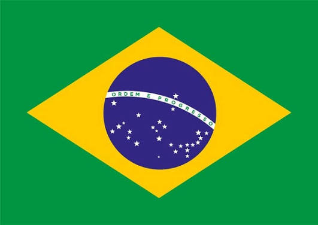
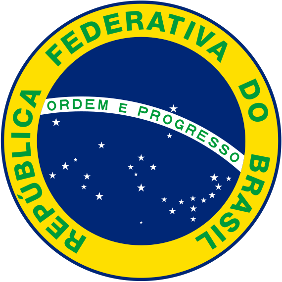
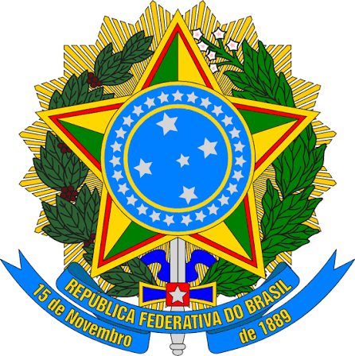

Brasil Colônia
O Brasil foi colônia de Portugal por mais de três séculos, desde a chegada dos portugueses, em 1500, até a Independência, em 1822. Durante esse período, a maior parte das riquezas produzidas na colônia, como açúcar, ouro e outros produtos, estava ligada aos interesses econômicos da Coroa portuguesa.
A sociedade colonial era marcada por grandes desigualdades sociais e pela exploração do trabalho, principalmente de pessoas escravizadas. Portugal também controlava o comércio e estabelecia regras que limitavam a autonomia da colônia, criando insatisfações que contribuíram para o processo de Independência.
A relação entre Brasil e Portugal era baseada na exploração econômica e no controle político. A colônia deveria fornecer riquezas para Portugal e seguir as decisões da Coroa, enquanto muitas atividades comerciais eram submetidas às regras e aos interesses portugueses.
Com o passar do tempo, parte da população brasileira passou a defender maior autonomia. As ideias de liberdade e independência que circulavam no mundo também chegaram ao Brasil, aumentando os questionamentos sobre a permanência do domínio português
Em 1808, a Família Real portuguesa chegou ao Brasil, fugindo das tropas de Napoleão Bonaparte, que haviam invadido Portugal. A presença da Corte transformou o Rio de Janeiro em centro político do Império Português e provocou importantes mudanças na colônia.
Entre essas mudanças, destacam-se a abertura dos portos às nações amigas, a criação de instituições e o desenvolvimento do comércio. Essas transformações aumentaram a importância política e econômica do Brasil e prepararam condições para sua futura separação de Portugal.
Contexto político e econômico
No início do século XIX, Portugal enfrentava dificuldades políticas e econômicas, enquanto o Brasil ganhava maior importância dentro do Império. Em 1815, o Brasil foi elevado à condição de Reino Unido a Portugal e Algarves, deixando de ser oficialmente uma colônia.
Em 1820, ocorreu a Revolução Liberal do Porto, que exigiu o retorno de D. João VI a Portugal e a retomada do controle sobre o Brasil. D. João VI retornou em 1821, deixando seu filho, D. Pedro, como príncipe regente no Brasil.
No início do século XIX, Portugal enfrentava dificuldades políticas e econômicas, enquanto o Brasil ganhava maior importância dentro do Império. Em 1815, o Brasil foi elevado à condição de Reino Unido a Portugal e Algarves, deixando de ser oficialmente uma colônia.
Em 1820, ocorreu a Revolução Liberal do Porto, que exigiu o retorno de D. João VI a Portugal e a retomada do controle sobre o Brasil. D. João VI retornou em 1821, deixando seu filho, D. Pedro, como príncipe regente no Brasil.
.

Em 1822, as tensões entre as autoridades portuguesas e D. Pedro aumentaram. As Cortes portuguesas queriam que ele retornasse a Portugal, mas o príncipe decidiu permanecer no Brasil, atitude que ficou conhecida como Dia do Fico, em 9 de janeiro. Nos meses seguintes, D. Pedro tomou medidas que ampliaram a autonomia política do Brasil. Em setembro, durante uma viagem pela região de São Paulo, recebeu novas ordens de Portugal e decidiu romper definitivamente os vínculos políticos com a Coroa portuguesa..
Em 7 de setembro de 1822, às margens do riacho do Ipiranga, em São Paulo, D. Pedro declarou a separação política do Brasil em relação a Portugal. Esse acontecimento ficou conhecido como Grito do Ipiranga e é tradicionalmente representado pela frase “Independência ou Morte!”.
A imagem de D. Pedro proclamando a Independência tornou-se um dos principais símbolos da história brasileira. A famosa pintura de Pedro Américo, Independência ou Morte!, ajudou a construir essa representação, embora a realidade do processo tenha sido mais complexa do que a cena retratada..
A Independência do Brasil marcou a separação política de Portugal e deu início ao Brasil como um país independente. Em 12 de outubro de 1822, D. Pedro foi proclamado imperador e, em 1º de dezembro, foi coroado como D. Pedro I.
Apesar da Independência, muitas estruturas da sociedade colonial permaneceram. A escravidão continuou, as desigualdades sociais permaneceram e diferentes regiões participaram do processo de maneiras distintas.
Por isso, a Independência deve ser entendida como um processo histórico, e não apenas como um acontecimento de um único dia..


